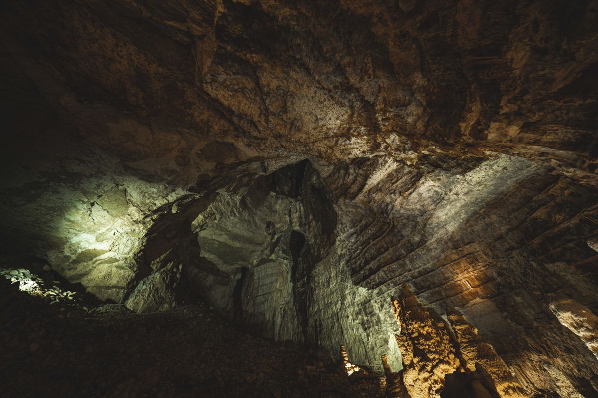

Case 01 · Resurvey & data rescue
The Long Through Trip: a loop that would not close
- System
- Through-cave, two entrances
- Ground
- Vertical limestone, Dales type
- Client
- Regional karst conservation partnership
- Survey grade
- 5C, BCRA scheme
- Line surveyed
- 4.86 km · 612 stations
- Status
- Closed within grade — after resurvey

The brief
A two-entrance through system surveyed over two seasons by a volunteer team. On paper the loop between the entrances misclosed by 11.4 m over 4.86 km — far outside the grade the map claimed. The partnership could not publish, could not use it for access decisions, and did not know whether the cave or the book was at fault.
Decisions
Audit before boots: I re-reduced the original notes leg by leg at the desk first, because most misclosures are born in the book, not the cave. The desk audit cleared the arithmetic and isolated the error to one 340 m section. That section — and only that section — was re-walked and re-read over three trips, every leg shot in both directions.
Outcome
The blunder was a transposed bearing: 214° written for 124° on one leg in a wet book, in handwriting three people had since copied faithfully. Corrected and resurveyed, the loop closed at 0.9 m, inside grade. The partnership got a publishable survey, an errata sheet naming the error plainly, and a book the next team can re-walk. The testimonial on the home page is theirs, about this job.